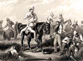
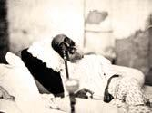
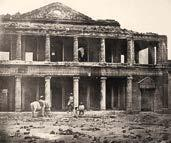
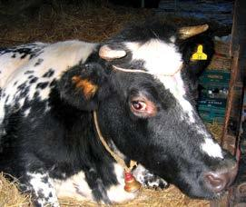
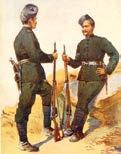

At the time, Britain ruled India through the Honourable East India Company. There was no major competition as the French had been defeated many years before. The company was an independent corporation with its own army, which was even bigger than the regular British Army. Although most of the army’s troops were native Indians, the officers were all British.
For many years, things were working well; but during the mid-19th century, there were rumblings of discontent. The British had been in India for about 200 years and their Asian possessions stretched from the Khyber Pass (on the Afghan border) to Burma. Indians were suspicious of Christian missionaries who showed little respect for the ancient culture and traditions of the subcontinent, and laws concerning inheritance caused anger among the natives. On top of this people started to talk about a prophecy. It said that 100 years after the Battle of Plassey (1757), the rule of the company would come to an end. But how?
The cause of the rebellion was a rifle. The British soldiers were using the Enfield rifle. In the 19th century, the rifle was modernised so that it could be easily loaded. To help the process the cartridge was greased with animal fat. Muslim and Hindu sepoys were outraged when they heard that this was a mixture of cow and pig fat as they had to touch the grease. The cow was sacred to the Hindus, and the pig was considered unclean by Muslims. The British realised their mistake, and told the soldiers to use the grease of their choice but the incident had gone too far already. Nobody trusted the Brits by now.
The final straw happened in March 1857 at Barrackpore. A sepoy  shot at an officer and then attacked him with a sword. When the general arrived on the scene, the sepoy tried unsuccessfully to kill himself. He was later hanged because of the incident. Indian soldiers were embittered over the episode but it was only the beginning.
In Meerut, 85 soldiers were court-martialled and sentenced to 10 years hard labour for refusing to handle the offending cartridges. To make matters worse, the British publicly humiliated these soldiers, stripping them of their uniforms and chaining them as they took the men to prison. A riot and local Indians went on the rampage, killing any Europeans they could find. The Indians then fled to Delhi.
Delhi didn’t have many troops and any British that the rebels found were killed. The local Indian leader, the Moghul Bahadur Shah,  was unwilling to help but took leadership when no British help arrived. The British marched on Delhi, murdering anyone disloyal on the way and met the rebels outside the city. The British won but they didn’t destroy the resistance, who retreated back to the heavily protected city.
Soon after, the British organised a column of Sikhs to march against Delhi. They were reinforced by regiments from the regular British Army who had arrived from the Crimean War, and the Gurkhas had also joined the force. The British eventually took Dehli and arrested the Moghul. Later, an officer, William Hodson, murdered the Moghul's three sons. Hodson, by the way, was the son of a clergyman. The Moghul was spared, but was sent into exile in Rangoon, where he died in 1862.
The next major confrontation was at Cawnpore. The general in this town naively thought his troops were loyal to him but they joined forces with an Indian nobleman, Naha Sahib who led them in a siege of the town fortress. After many days, and with the British inside the fortress starving and thirsty, a deal was struck: the people inside the fortress could leave. The pathetic column of British men, women and children left the fortress, but when they got to the river, things went horribly wrong. For some reason, the British opened fire on the Indian boatmen. In return, the rebels also opened fire, then took the women and children hostage. Later, they were killed in cold blood. This caused an outrage in Britain, and the British responded violently. Naha Sahib escaped, never to be seen again.
Lucknow was the last major hope of victory for the rebels. The British had barricaded themselves into a compound within the city. The siege, which lasted about five months, was defeated when Highlanders arrived to help the British residents.
In the months that followed,  the British took back what they had lost and went on the rampage across northern India. They killed and looted entire villages and many British families became rich because of this. This time of attacks became known as “The Devil’s Wind”. Anything the rebels did was repeated many more times by the British.
As a result of all this, the British government decided to form a government department to rule India. It was too big a colony for a private company, so the India Office was created. Eventually, India won its freedom in 1947 because of the successful independence movement led by the great Mahatma Gandhi. Ironically, the prophecy about the end of the East India Company’s rule came true, even though it was a hundred years later. ✪
Hindu groups against the government over a cow.
As you know, the cow is sacred for Hindus. It cannot be killed, it cannot be hurt and it certainly cannot be eaten. Just recently, British Hindu groups were concerned over the killing of a cow named Gangotri by the RSPCA (the Royal Society for the Prevention of Cruelty to Animals). The cow was being kept at the Bhaktivedanta Manor Temple in Hertfordshire, England. On 13th December 2007, RSPCA inspectors and a government prophecy arrived at the temple and gave the cow a vet lethal injection. The cow had damaged her back legs and could not stand. Hindus were furious. The RSPCA claimed that the cow was killed to prevent further suffering. However, Temple officials claim that the cow was being treated by vets, and was being cared for specially. The temple was donated in 1973 by ex-Beatle George Harrison. Staff at the temple run the Cow Protection Project where cows and bulls are allowed to die naturally. ✪
An attack by Indians against the British in India in 1857. The major cause was the use of cow and pig grease on cartridges for the Lee Enfield rifle. Hindus and Muslims found this offensive. The British won, but the repression caused long-lasting hatred. The British only lasted another 100 years and eventually left India in 1947.
